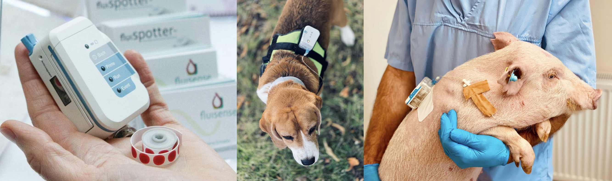
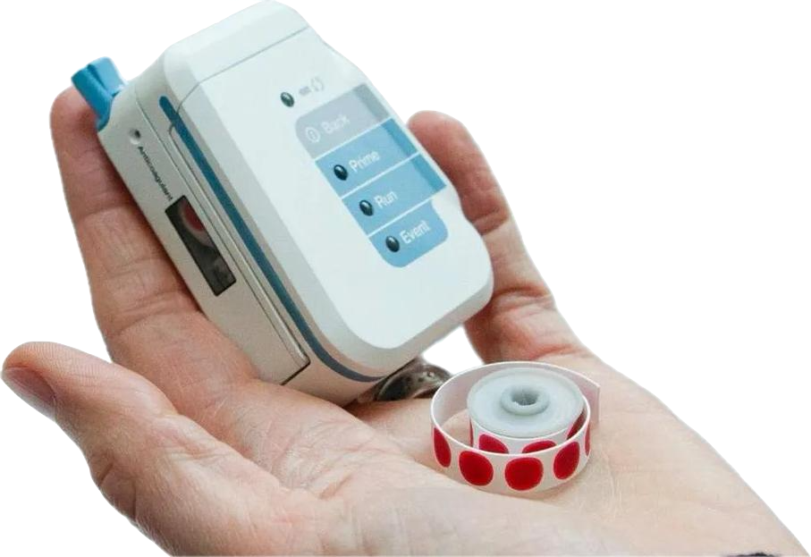

Wearable, automated PK/PD profiles in large animals
The Fluispotter wearable blood sampling system enables precise, high-frequency blood sampling for pharmacokinetic (PK) and pharmacodynamic (PD) preclinical studies in large animals — collecting samples from undisturbed, freely-moving animals for stress-free blood collection and enhanced animal welfare.

Overview
Conventional serial blood sampling in large animals is labour-intensive and stressful for the animal, which can compromise both welfare and data quality. Fluispotter is a small, body-worn device that automates the entire process: it draws, meters and stores blood samples on a schedule (or on demand), without anyone having to handle the animal. By combining automation, remote control and an animal-centric design, it produces dense, high-quality time-course data while supporting the well-being of the research subject.
Key features
Automated catheter maintenance
Built-in flushing keeps the line patent and prevents blockages throughout the study.
Flexible study execution
Load a predefined sampling protocol for automated execution, or trigger samples on demand from the remote interface.
Versatile vascular access
Supports catheter-in-catheter, subcutaneous ports, transcutaneous ports or direct vein access, depending on the study.
High sample capacity
Up to 50 samples per study at 10 µL each, for detailed time-course analysis.
Extended runtime
Up to 48 hours of continuous, uninterrupted operation.
Remote monitoring and control
Real-time feedback and full remote control let researchers follow progress and adjust the protocol as needed.
No manual fluid handling
An integrated anticoagulant system removes manual fluid handling and reduces contamination risk.
No carry-over
Uni-directional blood flow gives clean samples with zero carry-over between collections.
Wearable, low-burden design
Lightweight and suited to pigs, dogs, rabbits and non-human primates, allowing natural movement.
Dried blood spot output
Up to 50 dried blood spots over 48 hours, convenient for downstream bioanalysis and storage.
Applications
- Cardiovascular telemetry studies for drug safety.
- Drug absorption, distribution, metabolism and excretion (ADME) studies.
- Dose-response and efficacy assessments in PD models.
- Biomarker analysis and therapeutic monitoring in large animal models.
Dried blood spot sampling
The device spots 10 µL blood samples onto a filter-paper strip, collecting up to 50 dried blood spots (DBS) per study. These are easily processed with standard punchers and analysed by HPLC, LC-MS/MS or ELISA. The non-heparin anticoagulant gives consistent dilution without matrix effects, which suits small molecules, peptides and biomarkers. Published work shows DBS results equivalent to whole blood, with good accuracy across hematocrit levels (Adhikari et al., 2020; Krogh et al., 2023), and the heparin-free approach has performed well for welfare and assay compatibility in canine and minipig models (Ollerenshaw et al., 2022; Velschow et al., 2016).

If you would like to validate your own compounds for DBS, please get in touch — we are happy to help.
Why researchers use Fluispotter
- Better science. Sampling from undisturbed animals removes the stress of handling from the procedure.
- More data, less intervention. Automated sampling allows far more frequent collection than manual methods, giving high temporal resolution without extra resources or added stress.
- Efficiency. Automating repetitive sampling frees up researcher time for analysis and study design.
- 3Rs alignment. Supports Replacement, Reduction and Refinement by minimising animal stress and improving outcomes.
- Traceability. Precise records of when each sample was taken and how it was stored, for reliable data integrity.
Technical specifications
| Runtime | Up to 48 hours of continuous operation. |
|---|---|
| Sample volume & capacity | 10 µL per sample, up to 50 dried blood spot samples. |
| Remote capabilities | Fully remote-controlled and monitored, with real-time data feedback. |
| Catheter maintenance | Automated flushing and upkeep for reliable performance. |
| Sample integrity | No-carry-over design with built-in anticoagulant for clean samples. |
Collaborators
We work with industry and academic partners to develop and evaluate the system, including:
- Boehringer Ingelheim — optimising automated sampling for drug development.
- Merck — supporting innovative PK/PD study solutions.
- Medical University of South Carolina — testing the device in pigs for PK/PD.
- BASi (Bioanalytical Systems, Inc.) — distribution to the research community.
We are always open to new academic and industry collaborations. If you think Fluispotter could help your work, please reach out.
Publications
Peer-reviewed publications and abstracts describing the device, its performance and its applications:
- Adhikari, K. B., et al. (2020). “Fluispotter, a novel automated and wearable device for accurate volume serial dried blood spot sampling.” Bioanalysis 12(10): 665–681. doi:10.4155/bio-2020-0048 High accuracy and precision in serial DBS sampling for cortisol across a range of hematocrit values.
- Krogh, J., et al. (2023). “Validation of a novel automated system, Fluispotter®, for serial sampling of dried blood spots.” Endocrine Connections 12(7): e230087. doi:10.1530/EC-23-0087 Reliable cortisol profiles in healthy human subjects with minimal discomfort; some blood-flow clogging noted.
- Krogh, J., et al. (2023). “Serial sampling of dried blood spots collected by a novel automated body-worn system, Fluispotter®.” Endocrine Abstracts 90: P439. endocrine-abstracts.org/ea/0090/ea0090p439 Presented at the 25th European Congress of Endocrinology (ECE2023).
- Ollerenshaw, J. D., et al. (2022). “A novel device for serial venous blood sampling in a canine model.” Journal of Pharmacological and Toxicological Methods 114: 107155. doi:10.1016/j.vascn.2022.107155 No stress-related changes in blood chemistry or behaviour in a canine model.
- Velschow, S., et al. (2016). “Technical and animal welfare perspectives of portable automated blood sampling with Fluispotter® in Göttingen Minipigs.” Scandinavian Journal of Laboratory Animal Science 42. Full text Meeting abstract; contact the journal for access.
For a complete, up-to-date list or copies of specific papers, please contact us.
About
Fluispotter was started in 2010 by Sten Velschow, a laboratory-animal veterinarian and former Lundbeck researcher with more than 20 years in pharmaceutical research. Running animal studies, he was frustrated by how error-prone and stressful manual blood sampling could be — for the animals and for the data — and set out to build a device that does it automatically. The device is designed, developed and built in Denmark. We are a small team, and we care a great deal about getting this right.
Contact
We would be glad to hear from you — whether about a study, a collaboration, or just a question.
Fluispotter ApS
Olgasvej 42, 2950 Vedbæk, Denmark
post@fluispotter.com
+45 42 60 05 70
LinkedIn